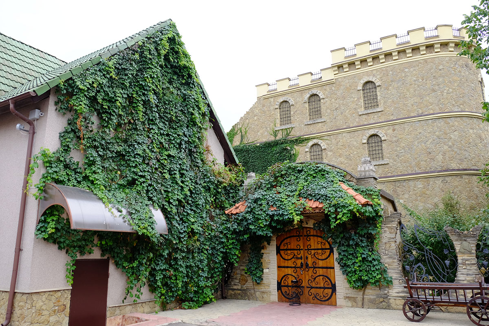
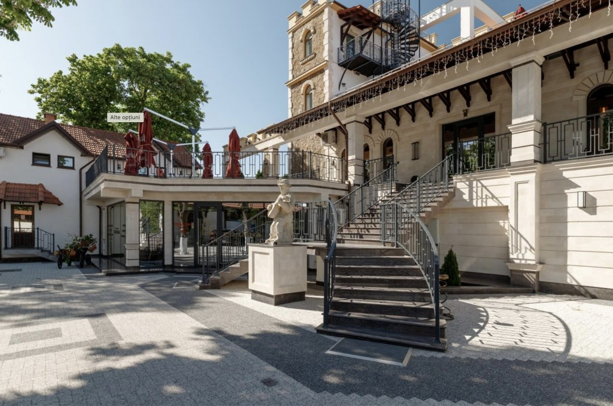
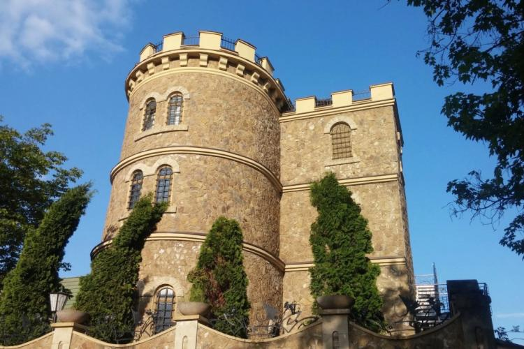
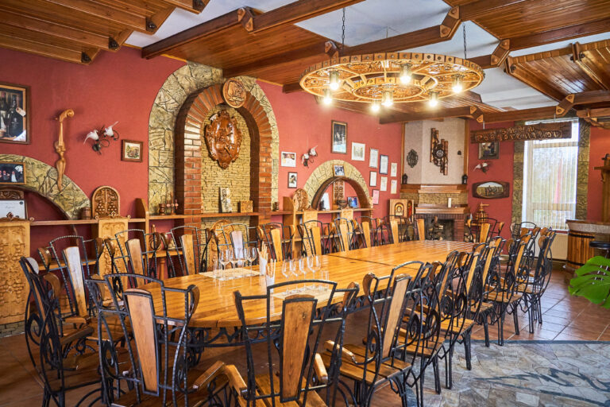
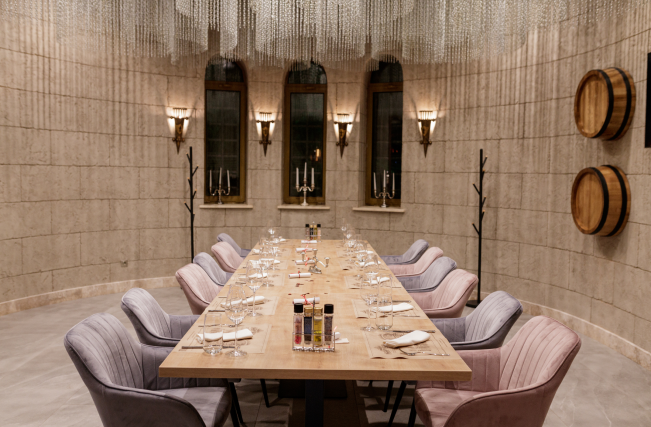
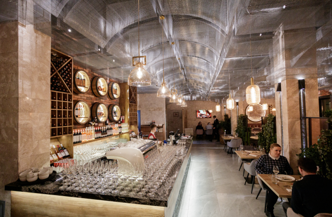

Istoria Chateau Cojușna
În 1995, Grigorie Panuș a fondat Migdal-P S.A., începând construcția vinăriei de la zero pe un teren cumpărat în apropierea satului Cojușna din raionul Strășeni. Această perioadă a marcat debutul activității vinăriei.
În 1999, fabrica de producție și îmbuteliere a vinurilor a fost inaugurată sub numele de Chateau Cojușna. Acest complex, situat la 15 km de Chișinău în regiunea vitivinicolă “Codru”, a devenit un punct de referință în centrul Republicii Moldova.
Între anii 2005 și 2007, s-au plantat peste 200 de hectare de viță de vie în podgoriile Migdal-P, cu soiuri atât autohtone, cât și europene. Unele dintre aceste podgorii se află la doar 5 km distanță de vinărie, în localitatea Roșcani.
În 2006, pentru a se conforma celor mai înalte standarde de calitate în producerea divinurilor, a fost instalat echipamentul francez pentru distilarea de tip “Charente” în incinta fabricii, importat din regiunea Cognac din Franța.
În 2012, a fost lansat primul divin sub marca comercială Migdal. În prezent, Chateau Cojușna se mândrește cu două mărci de divinuri: Migdal și Autentic.
Seria MIGDAL XO oferă divinuri cu o maturitate de 7 și 10 ani, în timp ce seria Autentic include divinuri cu maturități de 3, 5, 7 și 10 ani.
În 2023, a fost introdus pe piață Chateau Cojușna XO cu o maturitate impresionantă de 15 ani. Acest divin de excepție adaugă o notă de rafinament și eleganță în colecția lor, reprezentând un adevărat diamant printre divinurile oferite.
Restaurantul Chateau Cojușna
Chateau Cojușna oferă și un restaurant spațios și potrivit oricărui tip de evenimente, deschis anul împrejur. Restaurantul are un meniu variat, potrivit pentru orice gust.
Degustarea se desfășoară în incinta restaurantului „Chateau Cojușna”. La cerere, puteți beneficia de una dintre cele 4 săli de degustare ale complexului turistic „Chateau Cojușna”.
Această experiență gustativă include atât vinuri de calitate selectă, cât și vinuri de colecție, în funcție de pachetul ales.
 